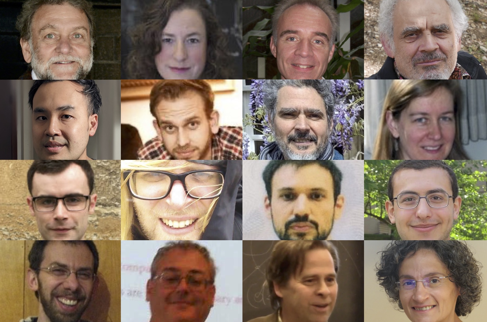

|  |
2022 Workshop on Polynomial FunctorsAt the Topos Institute and online via Zoom2022 March 14–18 (UTC) |
Participants will learn background material and hear the latest progress on polynomial functors. The main topic is the notion of polynomial functors in locally cartesian closed categories, as employed in logic and type theory (the theme of last year's workshop). However we also include a tutorial and talks on the notion of polynomial functors in the sense of Eilenberg and Mac Lane, hoping to uncover connections between these two notions.
This is the second workshop in a series. The first Workshop on Polynomial Functors was held in March 2021.
| ● Steve Awodey x2: |
▼ Tutorial: Polynomial functors and type theory
Abstract: This 2-lecture tutorial will explain the connection between dependent type theory and polynomial functors first explored in [1]. The first lecture presents the basic notion of a "natural model" of type theory, a functorial reformulation of the concept of a "category with families", capturing the syntax of dependent type theory. We show how the usual type theoretic rules of dependent sums and products correspond to the structure of a polynomial monad on the associated natural model, and an algebra for that monad. In part 2 we show what it means to add identity types and universes to the type theory, consider the relation between natural models and Joyal's "tribes", and state some open problems. [1] S. Awodey, Natural models of homotopy type theory, Mathematical Structures in Computer Science 28(2), pp. 241–286 (2018) |
| ● Kristine Bauer: |
▼ TBA
Abstract: |
| ● Pierre-Louis Curien: |
▼ TBA
Abstract: |
| ● Elden Elmanto: |
▼ Bispans in algebraic geometry
Abstract: The category of bispans is to the category of commutative rings, as the category of spans is to the category of abelian groups. If one believes this, then it is not a stretch that various forms and ideas of algebraic geometry arise from and interact with the category of bispans. I will survey recent work around this idea. Original results presented are with Rune Haugseng, but other results include those of Bachmann-Hoyois and Barwick-Glasman-Mathew-Nikolaus. |
| ● Marcelo Fiore: |
▼ TBA
Abstract: |
| ● Nicola Gambino: |
▼ TBA
Abstract: |
| ● Brenda Johnson: |
▼ TBA
Abstract: |
| ● Sean Moss: |
▼ TBA
Abstract: |
| ● Fredrik Nordvall Forsberg: |
▼ TBA
Abstract: |
| ● Valéria de Paiva: |
▼ TBA
Abstract: |
| ● Exequiel Rivas: |
▼ TBA
Abstract: |
| ● Brandon Shapiro: |
▼ Polynomial representations of pra functors between presheaf categories
Abstract: For any functor $f : C \to D$, there is a restriction functor $f^* : \hat D \to \hat C$ between their presheaf categories with left and right adjoints $f_!,f_*$. Composites of these three types of functors have the form $f_! g_* h^*$ for some non-unique functors $f,g,h$ which form a polynomial in the category $Cat$, and when $h$ is a discrete fibration this composite is a parametric right adjoint (aka pra aka familially representable) functor. I will describe when two different polynomials in $Cat$ induce the same pra functor, give a canonical choice of polynomial ``representation'' for a given pra functor, and discuss connections between these representations and higher category theories. |
| ● David Spivak: |
▼ Functorial aggregation
Abstract: In this talk I'll explain how various universal operations in the the polynomial ecosystem combine to solve an applied problem: database aggregation. In particular, we will see that the category of comonoids and bicomodules in Poly has a coclosure operation as well as a local monoidal closed structure. Using these, we'll see how the seemingly atomic operation of transposing a span, or taking the opposite of a category, is actually a composite of two more primitive universal operations: a local dual and an adjoint. The ability of the polynomial ecosystem to so articulately carve nature at it's joints seems to be necessary for defining the deceptively simple idea of database aggregation, which can be roughly understood as "integrating along compact fibers". |
| ● Dima Szamozvancev: |
▼ TBA
Abstract: |
| ● Paul Taylor: |
▼ TBA
Abstract: |
| ● Todd Trimble: |
▼ TBA
Abstract: |
| ● Christine Vespa x3: |
▼ TBA
Abstract: |
Anyone interested in participating is welcome; an online registration form is now available. A zoom link will be sent out to registered participants a few hours before the workshop.
For other questions, please contact David Spivak or Joachim Kock.14:00–18:00 UTC
Tokyo 23:00–03:00 (+1); Barcelona 15:00–19:00; UK 14:00–18:00; US East Coast 10:00–14:00; US West Coast 07:00–11:00.